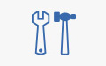

 ПП ”Інструмент”
Випускник 2007 року Максим Бондаренко - інженер-конструктор ПП ”Інструмент”
На підприємстві "Інструмент" яким керує п. Степан Іванців залюбки надають можливість провести хорошу і змістовну практику студентам третього і четвертого курсів КМВ. Студенти мають змогу впритул познайомитися з реальними технологіями металообробки та машинобудування, металообробними верстатами в тому числі верстатами з числовим програмним керуванням (ЧПК). У виробничий процес фірми органічно інтегрована конструкторська підготовка і підготовка програм для ЧПК, безпосереднім виконавцем яких є Максим Бондаренко.